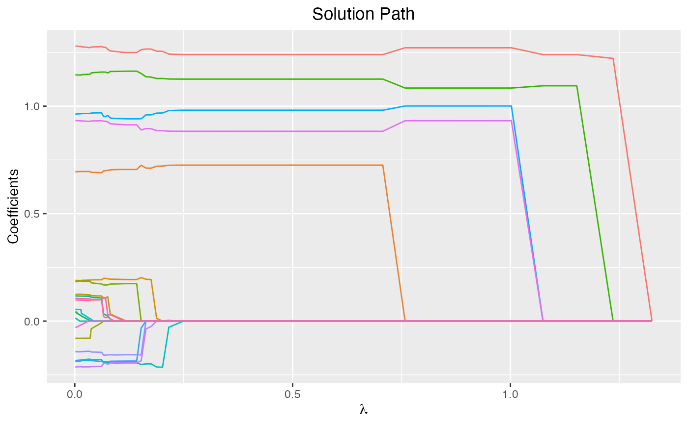

glmtlp
glmtlp.RmdGlmtlp is a package that fits generalized linear and similar models via penalized maximum likelihood. The regularization path is computed for the l0, l1, and TLP penalty at a grid of values (on the log scale) for the regularization parameter lambda or kappa (for l0). The algorithm is extremely fast. It fits linear and logistic regression models. The package includes methods for prediction and plotting, and functions for cross-validation.
The authors of glmtlp are Chunlin Li, Yu Yang, and Chong Wu, and the R package is maintained by Chunlin Li and Yu Yang. A Python version is under development.
This vignette describes basic usage of glmtlp in R.
There are two versions of our R package. One is on CRAN, which uses R BLAS internally, and the other is on Github, which uses OpenBLAS on Intel chips and uses Accelerate vecLib BLAS on Apple MI chips, and is much faster. We recommend users install the Github version.
install.packages("glmtlp")In this section, we will go over the main functions and outputs in the package.
First, we load the glmtlp package:
## Loading required package: foreach## Loading required package: parallelWe load a simulated dataset with continuous response to illustrate the usage of gaussian linear regression.
data(gau_data)
X <- gau_data$X
y <- gau_data$yWe fit three models by calling glmtlp with X, y, family="gaussian" and three different penalty.
fit <- glmtlp(X, y, family = "gaussian", penalty = "tlp")
fit2 <- glmtlp(X, y, family = "gaussian", penalty = "l0")
fit3 <- glmtlp(X, y, family = "gaussian", penalty = "l1")fit is an object of class glmtlp that contains all the relevant information of the fitted model for further use. Users can apply plot, coef and predict to the fitted objects to get detailed results.
We can visualize the coefficients by executing the plot method:
plot(fit, xvar = "lambda")
The output is a ggplot object. Therefore, the users are allowed to make further modifications on the plot to suit their own needs. The plot shows the solution path of the model, wich each curve correpsponding to a variable. Users may also choose to annotate the curves by setting label=TRUE. Note that for “l1” or “tlp” penalty, xvar could be chosen from c(“lambda”, “log_lambda”, “deviance”, “l1_norm”), and for “l0” penalty, xvar could be chosen from c(“kappa”, “log_kappa”).
We can use the coef function to obtain the fitted coefficients. By default, the results would be a matrix, with each column representing the coefficients for every \(\lambda\) or \(\kappa\). The users may also choose to input the desired value of \(\lambda\) or \(\kappa\)
coef(fit)...
## 0.951497 0.866968 0.789949 0.719772 0.655830 0.597568
## intercept -0.4014902 -0.2241503 -0.22950126 -0.19917539 -0.01461969 -0.01461716
## V1 0.0000000 0.0000000 0.00000000 0.85223316 0.99419652 0.99420922
## V2 0.0000000 0.0000000 0.00000000 0.00000000 0.00000000 0.00000000
## V3 0.0000000 0.0000000 0.00000000 0.00000000 0.00000000 0.00000000
## V4 0.0000000 0.0000000 0.00000000 0.00000000 0.00000000 0.00000000
## V5 0.0000000 0.0000000 0.00000000 0.00000000 0.00000000 0.00000000
## V6 0.0000000 0.0000000 0.00000000 0.02910853 0.89831048 0.89831892
## V7 0.0000000 0.0000000 0.00000000 0.00000000 0.00000000 0.00000000
## V8 0.0000000 0.0000000 0.00000000 0.00000000 0.00000000 0.00000000
...
coef(fit, lambda = 0.1)...
## intercept V1 V2 V3 V4 V5
## 0.007502138 0.998217372 0.000000000 0.177551177 0.217621169 0.000000000
## V6 V7 V8 V9 V10 V11
## 0.867575569 0.000000000 -0.033095347 0.160488370 0.830160073 0.000000000
## V12 V13 V14 V15 V16 V17
## 0.000000000 0.000000000 0.000000000 0.931837003 0.000000000 0.000000000
## V18 V19 V20
## -0.002741379 0.000000000 0.849237899
NA
NA
...In terms of prediction, the users need to input a design matrix and the type, as well as the desired level of regularization parameters.
predict(fit, X[1:5, ], lambda = 0.1)## [1] -1.5748074 0.3901728 0.1573561 -0.6070150 2.3967091Cross-validation can be implemented by cv.glmtlp to find the best regularization paramter.
cv.fit <- cv.glmtlp(X, y, family = "gaussian", penalty = "tlp")cv.glmtlp returns a cv.glmtlp object, a list with all the ingredients of the cross-validated fit. Users may use coef, predict, and plot to further check the cross-valiation results.
coef(cv.fit)## intercept V1 V2 V3 V4 V5 V6
## -0.0146163 0.9942102 0.0000000 0.0000000 0.0000000 0.0000000 0.8983251
## V7 V8 V9 V10 V11 V12 V13
## 0.0000000 0.0000000 0.0000000 0.8610009 0.0000000 0.0000000 0.0000000
## V14 V15 V16 V17 V18 V19 V20
## 0.0000000 0.9750232 0.0000000 0.0000000 0.0000000 0.0000000 0.8805657
plot(cv.fit)This plot is a ggplot object and the users are allowed to make further modifications on it.
Shen, Xiaotong, Wei Pan, and Yunzhang Zhu. “Likelihood-based selection and sharp parameter estimation.” Journal of the American Statistical Association 107.497 (2012): 223-232. https://doi.org/10.1080/01621459.2011.645783.
Tibshirani, Robert, et al. “Strong rules for discarding predictors in lasso‐type problems.” Journal of the Royal Statistical Society: Series B (Statistical Methodology) 74.2 (2012): 245-266. https://doi.org/10.1111/j.1467-9868.2011.01004.x.
Yang, Yi, and Hui Zou. “A coordinate majorization descent algorithm for l1 penalized learning.” Journal of Statistical Computation and Simulation 84.1 (2014): 84-95. https://doi.org/10.1080/00949655.2012.695374.